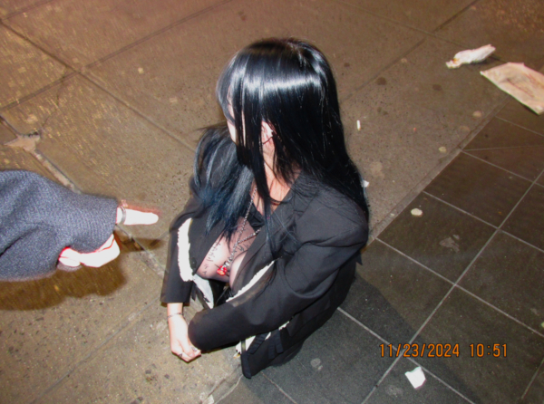

Student Overview
Tu Quynh Kim Vuu
Preferred Name: TQ (She/Her)
Hometown: Orange County, California, USA
Campus: NYU Shanghai
Major: Interactive Media Arts
Prospective Minor: Computer Science - Web Programming & Applications
Graduation Year: 2026

Welcome to my portfolio dedicated to all the projects I've done for my major, Interactive Media Arts! Through the courses I have taken, I have explored a vast range of focuses within IMA, but I am most interested in Game Design and will possbly be pursuing this career path in the near future. My home campus is NYU Shanghai (上海纽约大学), and I have chosen to spend my two study away semesters in New York. Take a look at my project documentations!